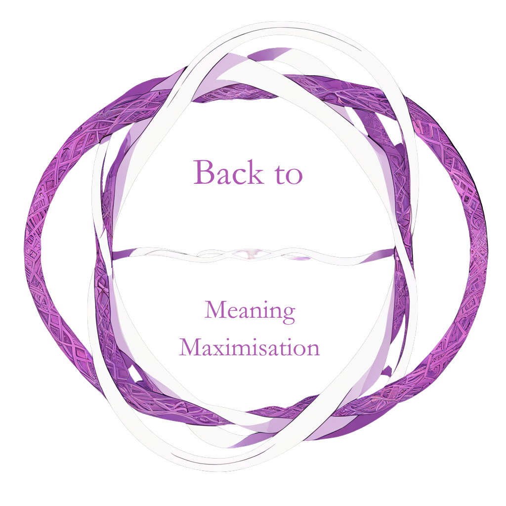

Platzhalter Du · Webseite / Texte
intern · freigeschaltet
Die Säulen-Seite könnte eine kurze und eine tiefe Version haben — sonst springen Leute ab.
Prototyp · Preview · nicht veröffentlicht
Zum Inhalt
BtMM, Startseite Melde dichStart · Feedback · Freischaltungs-Mock
Clickdummy ohne Auth/Server. Umschalten zeigt die UX-Zustände. UI-Preview freigegeben (Nutzer-Ja Sp. 134). Auth/Speicherung bleiben Mock — echte Kontoanlage braucht separates Nutzer-Ja.
Freigeschaltet als Interessent/in · MitmacherMocknur nach Freischaltung
Platzhalter Du · Webseite / Texte
intern · freigeschaltet
Die Säulen-Seite könnte eine kurze und eine tiefe Version haben — sonst springen Leute ab.
Platzhalter BtMM · Antwort (Mock)
intern
Danke — genau dafür gibt es die Text-Stufen (Kurz → Mehr dazu → Tiefe).
Zustand: gesperrtMock-Toggle
Feedback und Bewertungsvorschläge sind für Menschen, die wirklich mitmachen oder unterstützen wollen — auch mit Kritik. Schreib uns kurz, wer du bist und wie du mitbauen willst. Danach schalten wir den Schreibzugang frei.
Eingereicht · Prüfung läuftnicht öffentlichMock
Dein Feedback ist eingereicht. Es ist nicht sofort öffentlich. Wir prüfen es (Moderation). Sachliche Kritik bleibt willkommen; Spam und Beleidigungen werden nicht freigeschaltet.
Mock-Zustand für Screens (03c). Keine Speicherung, keine Mail, kein Server.
Dein Beitrag · wartend
Status: eingereicht · Prüfung läuft
[Dein Text erscheint hier nach Absenden — Platzhalter]